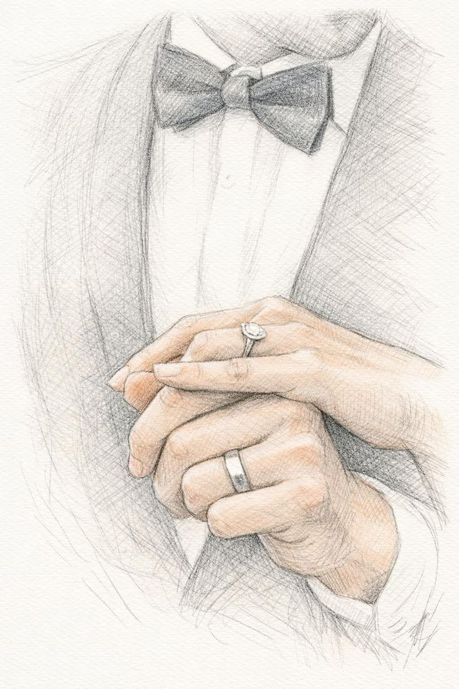

An unsere wundervollen Gäste
Es fühlt sich an, als würde die Zeit gerade ein wenig schneller laufen, denn unser großer Tag kommt immer näher. Umso mehr freuen wir uns darauf, diesen besonderen Moment mit euch zu teilen und ihn gemeinsam mit all den Menschen zu feiern, die uns so sehr am Herzen liegen.
Mit dieser Seite möchten wir euch einen liebevollen Ort geben, an dem ihr alle wichtigen Informationen rund um unsere Hochzeit gesammelt findet. Und weil mit jedem Tag noch ein paar weitere Details dazukommen, könnt ihr hier jederzeit alles nachlesen und euch in Ruhe auf unseren besonderen Tag einstimmen.
Auch am Tag unserer Hochzeit wird diese Seite für euch wichtig sein, denn hier findet ihr dann die letzten Informationen zum Ablauf, zur Sitzordnung und natürlich auch zum Menü. So habt ihr alles Wichtige an einem Ort und könnt den Tag ganz entspannt mit uns genießen.
14193 Berlin
